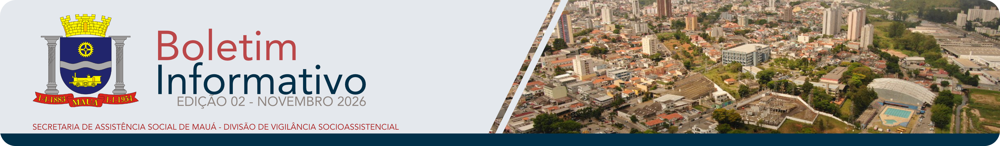

1ª Edição
Maio de 2026
Panorama do Cadastro Único, indicadores sociais, vulnerabilidades territoriais e informações estratégicas para o planejamento da Assistência Social.
Visualizar BoletimInformação, território e proteção social em Mauá
O boletim informativo da VSA tem como finalidade divulgar dados, análises e informações relevantes sobre o território, as ofertas socioassistenciais, e a situação das famílias e indivíduos atendidos pela política de Assistência Social, o SUAS. Ele pode ser usado para apoiar o planejamento, tomada de decisão e mobilização da rede de proteção social.
Nesta seção serão disponilizados as edições publicas dos boletins elaborados pela Vigilância Socioassistencial de Mauá.
Maio de 2026
Panorama do Cadastro Único, indicadores sociais, vulnerabilidades territoriais e informações estratégicas para o planejamento da Assistência Social.
Visualizar Boletim
Novembro de 2026
Texto de referência para o segundo boletim a ser elaborado.
Visualizar Boletim